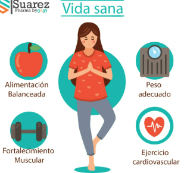

¿Qué es la salud fisíca?
La salud física se refiere al estado de bienestar del cuerpo, incluyendo su óptimo funcionamiento fisiológico y la ausencia de enfermedades.
Es la capacidad de los órganos y sistemas corporales de funcionar eficientemente, lo que contribuye a una vida plena y saludable.
¿Cuál es la importancia de tener un cuerpo sano?
-Mayor energía y vitalidad.
-Mejor estado de ánimo.
-Salud mental fortalecida.
-Prevención de enfermedades.
-Es crucial para una vida de bienestar, permitiendo a las personas experimentar una mejor calidad de vida,
prevenir enfermedades, aumentar la energía, mejorar el estado de ánimo y fortalecer la salud mental.
A continuación vemos un diagrama que nos explica como tener un cuerpo sano
